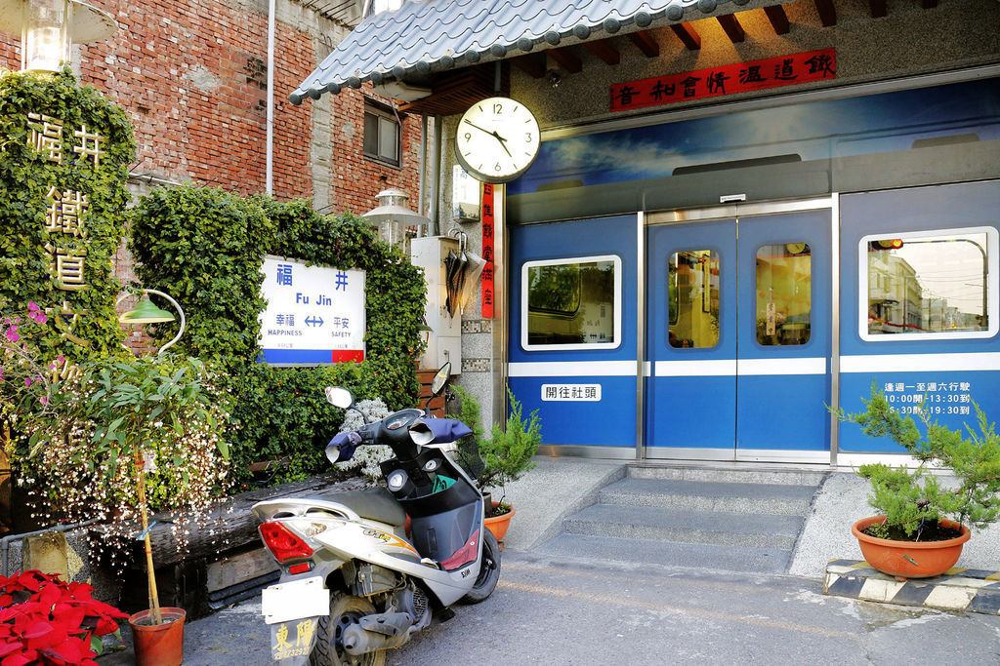
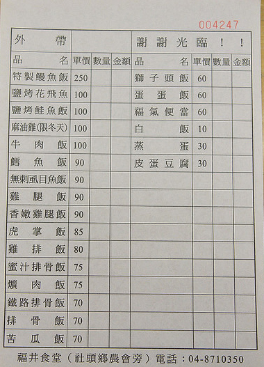

福井食堂
由出身鐵道世家的陳朝強一手創立的福井食堂，不僅吃得到美味的精緻料理，還能看到老闆十多年來辛苦蒐集與收藏的鐵道文物，是國內難得一見的鐵路主題餐廳，更是許多中外鐵道迷必到的朝聖站，在社頭地區也是有名的排隊便當店，大門完全仿製台鐵車廂，就像要搭火車一樣
|  | 福井食堂的菜單相當簡單，主要供應的就是便當簡餐，口味選擇還算多樣化，和快餐便當豐米有點類似。 價格大約落在$60~$100之間，屬平價便當。 |
| 門票 | 免費參觀 | |
| 地址 | 彰化縣社頭鄉社斗路一段336號 | |
| 電話 | 04-8710350 | |
| 參觀時間 | 10:00–13:30 , 16:30–18:30 星期日公休 |